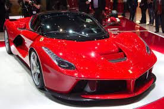

 Es el primer vehículo híbrido eléctrico de la casa de Maranello, una propulsión que lo ubica como el Ferrari más potente jamás producido y le permite una reducción del 40% en consumo de combustible.8 Cuenta con el mismo motor V12 naturalmente aspirado de 6262 cm³ (6,3 L; 382,1 plg³) del Ferrari F12berlinetta,9 que desarrolla una potencia máxima de 800 CV (789 HP; 588 kW) a las 9000 rpm y un par motor máximo de más de 700 N·m (516 lb·pie) a las 6750 rpm. Cuenta con asistencias electrónicas como control de tracción, control de estabilidad y un diferencial electrónico de tercera generación. Asimismo, se considera primordial tanto el centro de gravedad, como la eficiencia y comodidad de la posición del conductor dentro del habitáculo.
Fue presentado en el Salón del Automóvil de Ginebra el 28 de febrero de 2011, cinco meses después de su presentación oficial en Sant'Agata Bolognese, con código interno de desarrollo LB834. Poco tiempo después de la presentación al público, Lamborghini anunció que había vendido más de 12 meses de su producción. Las entregas comenzaron en el segundo semestre de 2011. El precio sugerido es de 275000 € en Europa, 241900 £ en el Reino Unido y 360700 US$ en los Estados Unidos. En España, su precio es de 350000 €, impuestos incluidos.5 La producción Aventador LP700-4 fue planeada en un principio para ser limitada a 4000 vehículos, tomando en cuenta que fueron construidos 4099 Lamborghini Murciélago.
El McLaren Senna es un automóvil superdeportivo de producción limitada con motor central-trasero fabricado por McLaren Automotive. El automóvil es la tercera incorporación en la "Serie Ultimate de McLaren", uniéndose al F1 y al P1. Sin embargo, no es un sucesor directo de ninguno de los autos. El Senna fue presentado en línea por la compañía el 10 de diciembre de 2017,8 con la presentación oficial en el Salón del Automóvil de Ginebra de 2018. . El Senna funciona con una versión modificada del motor V8 biturbo de 3994 cm³ (4 L; 243,7 plg³) del McLaren 720S, con el nombre en código M840TR. Utiliza una transmisión de doble embrague de siete velocidades que entrega todos 800 CV (588 kW; 789 HP) a las 7.250 rpm y 800 N·m (590 lb·pie) de par máximo a las 5.500 rpm para las ruedas traseras.